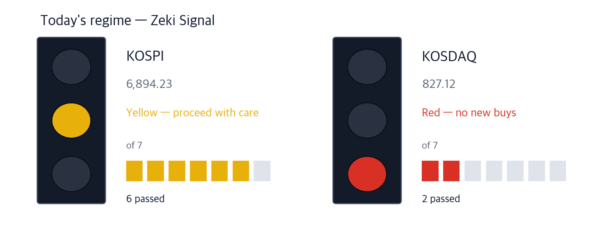
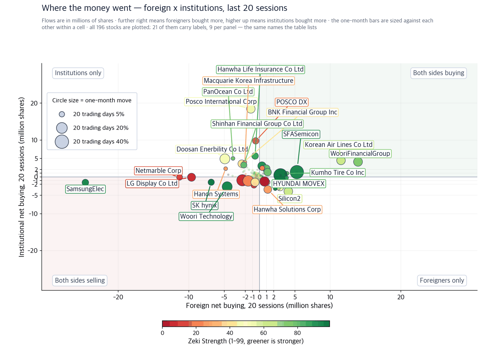
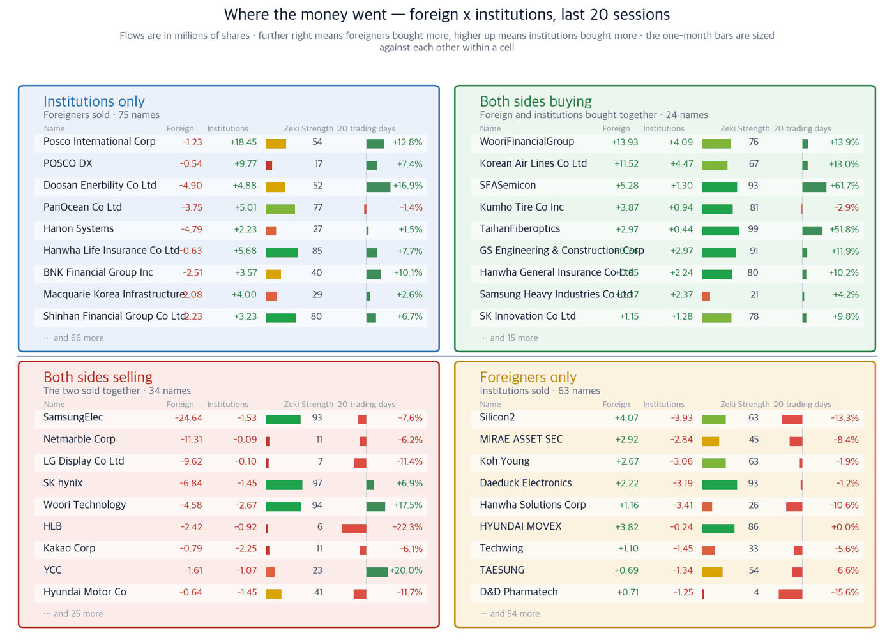

Seoul rose 2.66% to 6,894.23 on the day Japan raised rates
19 September 2026 · prices as of the 18 September close
Companies we do not own, found in the newspapers — with the figures behind why they might earn their place.
KOSPI 6,894.23 (+2.66%) | KOSDAQ 827.12 (+0.60%) | Nasdaq 26,523 (+0.39%) | US 10-year 5.00% | Zeki Signal Yellow |

How to read this
| Lit lamp | Today's regime. Green means buyers have the edge, yellow means wait, red means no new buys. |
| Filled squares | How many of the 7 conditions passed. More filled means firmer market structure. |
| All filled but not green | Something else pulled the grade down one step. The reason is printed under the lamp. |
The Zeki Signal reduces seven regime tests to a single light. KOSPI moved up from red to yellow, passing six of the seven. KOSDAQ passed two and stays red.
What to do now
Three conclusions first
Executive summary — three conclusions
- The Bank of Japan raised its policy rate from 1.00% to 1.25% on 18 September. No board member argued for a larger step. KOSPI turned up from the moment of the decision and closed 2.66% higher.
- Semiconductors led. Samsung Electronics rose 3.73% and SK hynix 6.42%. SFA Semicon, a back-end packaging house, is up 61.7% over 20 sessions. Foreign and institutional investors both bought it in that window.
- West Texas crude fell 6.2% in a day to $95.59 a barrel. Jet fuel is the largest single line in an airline cost base. Korean Air trades 4.0% below its 12-month high.
So what do we do: In the first 30 minutes on 21 September, watch whether volume goes to back-end chip names or to the airlines.
First, this week in the economy
If you remember one number, make it 1.25%. That is Japan's policy rate, the highest in 31 years. The United States moved first on 16 September, to a 3.75-4.00% band. Both tightened in the same week and Seoul still closed higher. (Korea Economic Daily)
| Date | What to watch | What it would mean |
|---|
| 21 September, first 30 minutes | whether KOSPI holds 6,894.23 | holding it extends the two-day advance |
| 23 September close | whether foreign investors sell into the holiday | selling would take force out of the relief rally |
| 24-25 September | Korean market closed for Chuseok | two New York sessions land at once on 28 September |
Why — the evidence
Checked one by one against prices and flows
Theme 1 · With the yen-carry scare fading, chips moved first
Japan raised by less than feared. The worry that yen-funded positions would unwind at once receded, and chips filled the space. The same day brought word that Solidigm, SK hynix's US affiliate, is studying a NAND line on the US East Coast. (Korea Economic Daily)
SFA Semicon (036540) Well grounded · our pick for the theme
Close KRW 8,990 · 18 Sep +3.21% · 20 sessions +61.69%
3 months +46.18% · Zeki Strength 93 · -18.35% from the 12-month high
Who Solidigm, SK hynix's US affiliate · What studying its first US production site · When 18 September · Where the US East Coast · Why orders for high-capacity NAND for AI data centres are rising · How outsourced back-end volume in Korea rises with it
Foreign investors bought +5,283,682 shares over 20 sessions and institutions added +1,301,224 shares. Zeki Strength is 93. Flow data runs to 17 September.
Confirming signal — The 18 September close of KRW 8,990 sits above the 50-day average of KRW 5,867. Holding there keeps the NAND story alive.
Invalidation — A close below the 21 August price of KRW 5,560 erases the 20-session gain. A Zeki Strength below 90 also drops it.
Theme 2 · Capacitor prices are going up
A multilayer ceramic capacitor smooths the current inside an electronic circuit. AI data centres, electric cars and grid storage are all pulling on the same part at once. High-reliability grades are short, and the market now expects price rises. (Korea Economic Daily)
Samhwa Capacitor (001820) Well grounded · our pick for the theme
Close KRW 143,900 · 18 Sep +3.30% · 20 sessions +58.83%
3 months +5.81% · Zeki Strength 96 · -24.30% from the 12-month high
Who a Korean multilayer ceramic capacitor maker · What the expectation of price rises · When 18 September · Where in AI server and electric-vehicle markets · Why high-reliability grades are short · How margins widen
Foreign investors bought +211,180 shares over 20 sessions and institutions added +566,993 shares. Zeki Strength is 96. Flow data runs to 17 September.
Confirming signal — The 18 September close of KRW 143,900 sits above the 50-day average of KRW 98,952. While it closes above, the pricing story stands.
Invalidation — A close below the 21 August price of KRW 90,600 erases the 20-session gain. A report that supply has loosened would also remove the premise.
Theme 3 · Crude fell 6% in a single day
China warned Iran to rein in the Houthis, and worries about Saudi supply eased. West Texas crude came down to $95.59 a barrel. When crude falls, the industries that burn the most of it breathe first. That day, though, the airline sector fell 1.51%. The price has not followed yet. (Korea Economic Daily)
Korean Air (003490) Grounded · our pick for the theme
Close KRW 29,150 · 18 Sep -1.35% · 20 sessions +12.98%
3 months +6.58% · Zeki Strength 67 · -3.95% from the 12-month high
Who Korea's flag carrier · What a lighter fuel bill · When 18 September · Where in the global crude market · Why Middle East supply fears eased · How operating costs fall
Foreign investors bought +11,524,964 shares over 20 sessions and institutions added +4,465,636 shares. Zeki Strength is 67, short of 90. Flow data runs to 17 September.
Confirming signal — The 18 September close of KRW 29,150 sits above the 50-day average of KRW 27,167. Watch whether it holds while crude keeps falling.
Invalidation — A close below the 21 August price of KRW 25,800 erases the 20-session gain. Crude back above $100 would remove the premise.
Two themes we set aside today
Hyundai Motor said on 17 September that from next month it will build tens of thousands of robotaxis for Google's Waymo at its Georgia plant. From 2028 a humanoid robot will handle parts sequencing. The news is large but the price has not followed. The stock is down -11.7% over 20 sessions and Zeki Strength is 41. Both foreign and institutional investors sold in that window.
Excluded Hyundai Motor (005380) is set aside today.
Orders for very large crude carriers reached 217 this year, the most since 2000. Last year the count was 93. Owners avoiding the Strait of Hormuz have lengthened the Atlantic-to-Asia route. Korean yard prices have not moved on it. Hanwha Ocean is down -0.8% over 20 sessions with a Zeki Strength of 9. (Korea Economic Daily)
Excluded Hanwha Ocean (042660) waits until the price follows.
Today at a glance
| Theme | Name | Zeki Strength | Weight of evidence |
|---|
| Back-end chips | SFA Semicon (036540) | 93 | Well grounded |
| Ceramic capacitors | Samhwa Capacitor (001820) | 96 | Well grounded |
| Cheaper crude | Korean Air (003490) | 67 | Grounded |
| Robotaxi (excluded) | Hyundai Motor (005380) | 41 | No basis |
| Tanker orders (excluded) | Hanwha Ocean (042660) | 9 | Needs checking |
Weight of evidence — we counted four things
One, did the price rise. Two, is Zeki Strength above 90. Three, were foreign investors net buyers. Four, were institutions. All four use a 20-session window. The count sets the label. Prices are the 18 September close and flows run to 17 September.
| Name | ①up over
20 sessions | ②Strength
90+ | ③foreign
net buy | ④institutional
net buy | Met | Weight of evidence |
|---|
| SFA Semicon (036540) | O | O | O | O | 4/4 | Well grounded |
| Samhwa Capacitor (001820) | O | O | O | O | 4/4 | Well grounded |
| Korean Air (003490) | O | X | O | O | 3/4 | Grounded |
| Hyundai Motor (005380) | X | X | X | X | 0/4 | No basis |
| Hanwha Ocean (042660) | X | X | O | X | 1/4 | Needs checking |
Where the institutions and foreigners went
The two charts and the tables below owe nothing to the newspapers. They count the exchange's published net buying to show where money actually went. These are not our own calculations, so they do not carry the Zeki name. Data run to 17 September and thinly traded names are excluded.

How to read this
| One dot | One stock. Its position is simply its two values, and the horizontal and vertical rules through the middle are the centre line for each. The four corner labels say what each quadrant means. |
| Dot size | The last month's move, up or down. Bigger means it moved more. |
| Dot colour | Zeki Strength — greener is stronger. |
| Only 30 | Korean and ticker labels overlap beyond that. The names left out sit near the centre, where little moved. |

How to read this
| What this does not say | Flows and price move over the same period, side by side. What comes next: when foreigners and institutions buy, prices do rise for a day or two, then give it back — and the move is smaller than tax and commission. Trading on this picture loses money. Buy the day after you see both of them buying, and the odds of being up 20 sessions later are 48% — the same as picking at random (49%). We measured it on 503 stocks over 17 years. |
| Four panels | The two measures are each compared with a centre line. Top right cleared both, bottom left cleared neither, and the other two cleared one. Each panel's title is a plain sentence saying what that means. |
| The two middle columns | Where the two periods are compared. If they carry letters A-E, that is the standard scale this industry uses: A heavy buying, B buying, C an even split, D selling, E heavy selling (a rank of all names in fifths, so A is the top 20%). If they carry numbers, that is net buying over the period. |
| Nine per panel | The largest movers in that panel. The rest are counted at the foot of the panel. These same nine per panel are the names labelled on the scatter. |
| Month bar | Zero at the centre: right is up, left is down. Compare lengths within one panel only — each panel is scaled to itself. |
| Zeki Strength | A 1-99 rank. Longer and greener means the stock's price is stronger than the market. |
Scanned all 277 stocks in our flow data, excluding those trading under 3bn won a day.
One limit first. Korea discloses foreign and institutional net buying daily, but our mirror lags: the last recorded day differs by stock and none reach today. Each row carries its own as-of date.
Foreign investors bought most
| Stock | Net shares, 20 days | RS | 20 trading days | As of |
|---|
| 316140 | +13,931,405 | 76 | +13.9% | 09-17 |
| 003490 | +11,524,964 | 67 | +13.0% | 09-17 |
| 036540 | +5,283,682 | 93 | +61.7% | 09-17 |
| 257720 | +4,073,723 | 63 | -13.3% | 09-17 |
| 073240 | +3,870,560 | 81 | -2.9% | 09-17 |
Foreign investors sold most
| Stock | Net shares, 20 days | RS | 20 trading days | As of |
|---|
| 005930 | -24,638,623 | 93 | -7.6% | 09-17 |
| 251270 | -11,309,618 | 11 | -6.2% | 09-17 |
| 034220 | -9,620,116 | 7 | -11.4% | 09-17 |
| 000660 | -6,835,070 | 97 | +6.9% | 09-17 |
| 034020 | -4,904,491 | 52 | +16.9% | 09-17 |
Institutions bought most
| Stock | Net shares, 20 days | RS | 20 trading days | As of |
|---|
| 047050 | +18,452,113 | 54 | +12.8% | 09-17 |
| 022100 | +9,771,730 | 17 | +7.4% | 09-17 |
| 088350 | +5,679,320 | 85 | +7.7% | 09-17 |
| 028670 | +5,007,944 | 77 | -1.4% | 09-17 |
| 034020 | +4,884,345 | 52 | +16.9% | 09-17 |
Institutions sold most
| Stock | Net shares, 20 days | RS | 20 trading days | As of |
|---|
| 257720 | -3,934,271 | 63 | -13.3% | 09-17 |
| 009830 | -3,411,350 | 26 | -10.6% | 09-17 |
| 353200 | -3,194,826 | 93 | -1.2% | 09-17 |
| 098460 | -3,059,110 | 63 | -1.9% | 09-17 |
| 006800 | -2,835,699 | 45 | -8.4% | 09-17 |
Did money follow the names we found
Even when the story and the price agree, we check the money separately. The names above, with their net buying restated.
| Name | Foreign, 20 sessions | Institutions, 20 sessions | Which side bought | As of |
|---|
| SFA Semicon (036540) | +5,283,682 shares | +1,301,224 shares | both bought | 2026-09-17 |
| Samhwa Capacitor (001820) | +211,180 shares | +566,993 shares | both bought | 2026-09-17 |
| Korean Air (003490) | +11,524,964 shares | +4,465,636 shares | both bought | 2026-09-17 |
| Hyundai Motor (005380) | -640,430 shares | -1,451,806 shares | both sold | 2026-09-17 |
| Hanwha Ocean (042660) | +547,170 shares | -639,053 shares | foreign only | 2026-09-17 |
Which sectors were strong
The strongest sector on 18 September was electrical equipment, up 5.29%. Telecom equipment followed at 5.01%. These are simple averages of the 644 names we follow, grouped by sector.
At the other end sit non-life insurance at -2.02% and banks at -1.82%. Over 20 sessions those two are up 1.51% and 5.93%. The rate rise went into the price first, and the day itself was a pause.
Intraday checklist
| When | What to watch |
|---|
| 21 September, first 30 minutes | watch whether KOSPI holds above 6,894.23 |
| 21 September, first 30 minutes | watch whether volume favours back-end chips or the airlines |
| 21 September, last 30 minutes | watch whether Samhwa Capacitor closes above its 50-day average of KRW 98,952 |
How to read today's names
Zeki Strength ranks a stock's price performance from 1 to 99 against every name we follow. 99 is strongest.
Confirming signal and invalidation are conditions we write down in advance, with a price and a date, so they cannot be chosen after the fact.
Sources — the Korea Economic Daily print edition of 19 September and its articles, the tanker order count reported by Reuters, net buying published by the Korea Exchange, and our own price and flow data (prices to 18 September, flows to 17 September). We take the facts and write them in our own words.
Our price history excludes delisted companies, so past performance reads higher than it really was.
This digest carries names filtered by figures we calculate ourselves. It is not individual investment advice and does not recommend buying or selling any security. Every grade and rank shown is our own calculation, on a simulated portfolio basis. Investing carries risk of loss of capital.
This is the Rex Way, ZekiRex™